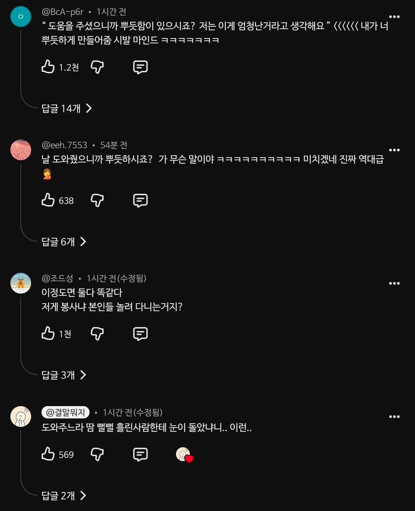

지은아...
이기적
걍 끼리끼리였구나
사고 방식이 많이 다르시네
몸만 고장난게 아니였네
이동권 보장 존나 잘 돼있는데 전장연은 뭔 정신머리로 박위한테 콜라보 제안한 거임?
휴...
출근길이라 참았다
종원의 칭호를 받을만 하다
와 그 중국에서 가마태우고 등산한 부자도 가마꾼 한사람당 몇백만원씩 줬다는데
지 휠체어 밀게하고 뿌듯하시죠 이지랄 ㅋㅋㅋㅋ
도대체 자아가 얼마나 비대한거냐 ㅋㅋㅋ
가마타고 행차하시네
저기서는 터키 욕 안함? 계속 지인들이 들고 다녀주는데
안하무인 후안무치 라는 말은 이럴때 쓰면 되지 싶은데